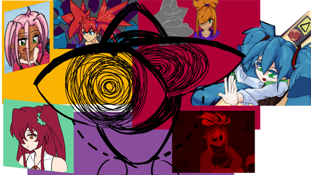
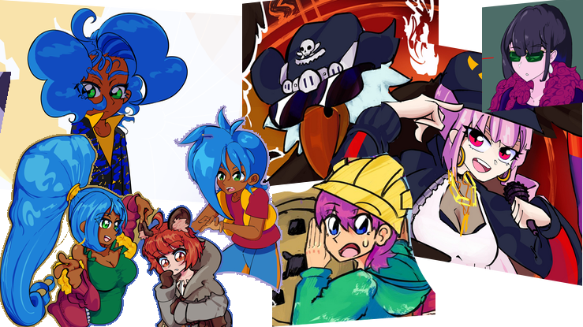

Identity doesn't exist in a vacuum, it is a thing we shape through rubbing ourselves onto the edges and corners of society. While freedom to be who you want is an important factor to why the internet can be so powerful a tool to employ expression, the frameworks and 'limitations' provided by various areas of the web can be important for the act of forming identity itself, whether initial or developing, and the internet can show in real-time how important it is to balance freedom and boundaries.
Take a username, while the big 5 tech companies of our generation encourage us to write our full name to associate with our account, eventually if you explore deeper you will be hit with the questions of Who-am-I and What-am-I, translated through being asked to give your Username and perhaps a Profile Picture. And you're given probably one of the hardest decisions in the entirety of your internet experience, as the options truly are endless except for one thing: Your first name is most likely already taken
Your parents can't save you now, you have to make a decision (actually, I brainstormed my initial one with my mom), and if you're lucky you wont end up on something like [Hobby][Gender]. That may sound specific, but honestly it's one I've seen quite a lot. Generally I don't like it because it limits you while not giving you a lot of character, usually you'll be online to talk to people with the same interests, and they'll already know whether you're interested or not by the fact that you are talking about the thing, but even more importantly, you risk defining yourself based upon having a certain interest. Thankfully nowadays I do see a lot more usernames that look like they could exist as names, though the inescapable with all usernames is that you get an idea of softness or harshness associated with the letters ('Areon' vs 'Kuttak')
The image is almost even more important, images say more than a thousand words, you know this. Leaving yourself empty can even lead people to have absolutely no impression of you, as other people with a default or empty profile picture end up encroaching on your identity, or you on theirs.
Profile pictures are also a lot better at communicating you and your interests, whether through expressing how you see yourself, how a character in a show communicates some dimension of yourself, to maybe you just want to show how into trains you are, or what video game character you tend to play. Something there is opportunity for is allowing different modes of yourself to be

highlighted through different profiles, they are after all, profiles - this can help you set yourself into the shoes of a different version of yourself, (you can try setting yourself up to be a specific person, but your actions will always have the accent of your own pattern of thought, though the putting yourself into anothers shoes still allows you an easier time empathising with them and others in the future), and this can allow you to see the possibilities of yourself and how you'd most want to act should your culture chained you to behave or express a certain way. One dimension of this is gender, as in most contemporary cultures, one often receives subtle cues as to what is good behavior and bad behavior and expression, often based on a categorization of what assumed hormone balance you are going to have when you first were born, and the internet allows you even to divorce from all of that and lean into the expression of a bird, or t̸͕̎h̴̹̿̂è̸̬͝ ̴̯̃̈́v̶̩̟̋o̴̜͒͂ͅi̵̺͍̓͂d̸̍͠ͅ, and you are allowed an almost therapeutic space to explore, allowing yourself to getting closer to understanding a desired you and ponder what and why you desire, both in expression but also just in general as you can play with forcing yourself into habits and interests, even with the excuse that you want to

express a character you're building on. Furries are a recent term for a phenomena we've also only recently come to terms with, there are a lot of cultures that have created anthropomorphic animals as well as some who've encouraged spirit animals, sometimes the embodiment thereof. In the digital sphere you can sometimes happen upon art hoping to channel true-selves, and this is especially a genre that furrydom leans on as it's a way of expression that proves highly inconvenient to try and commit to in real life, first being expensive, and secondly, in part due to the cartoonish aspects of most contemporary expression, it leads to a very stuffy environment for the expresser as they want to cover their entire body in their expression, trying to get as close to their ideal anthropomorphic self as possible, and the digital is a lot better at expressing your snout or how many legs you've got, where drawings also serve as liminal story-telling allowing one a state of constant being in the moment of the action portrayed by one's abstract character, a way to also dream oneself in on what they want to be doing with themself. A recent movement in the identity-space has been Virtual Youtubers (Vtubers) and Virtual-Reality Chatrooms (like VRChat), both serving as ways for people to have an expressive visual identity with the visual privacy attached, by having a 3D model or an image modified to be a model hooked up to receive the movements from one's webcam, or with VR, the gyroscope whatever shit that i dont really know the details on that a VR headset gives you. Above, I've provided various examples of expression, some my own, some of others, and some I completely made up. They're all my drawings, just to flex.. The internet has been a great tool for my own expression and finding of identity, as someone who found themself to be genderfluid, the internet's flexibility towards rapid changing of visual expression has been a very freeing experience, and I can imagine it only getting more-so as technologies advance, and if or when we see the singularity or a transhumanist society we might one day be able to imagine these types of surreal identities becoming part of the physical as people are able to more actively swap their expressions and ideas of who they are depending on any given day, whether wanting to express as a tall woman, a short gender-non-comforning person, a wolf, a fucking train, an ant or whatever. On the internet, nobody knows what you came in as unless you decide to express those aspects of yourself, to which people might inherently attribute certain experiences, which can sometimes be important for conversation, and other times something you wish you could divorce yourself from entirely.